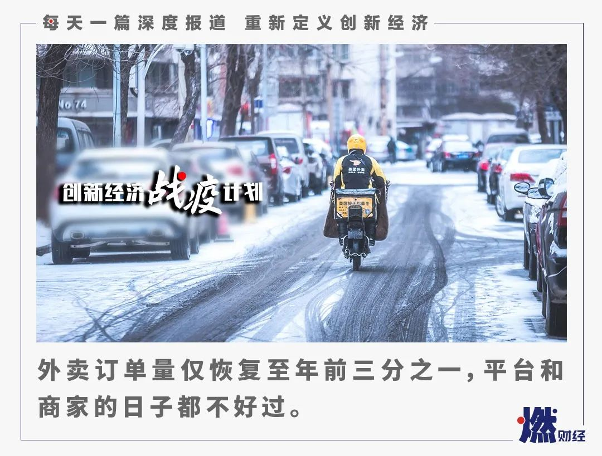
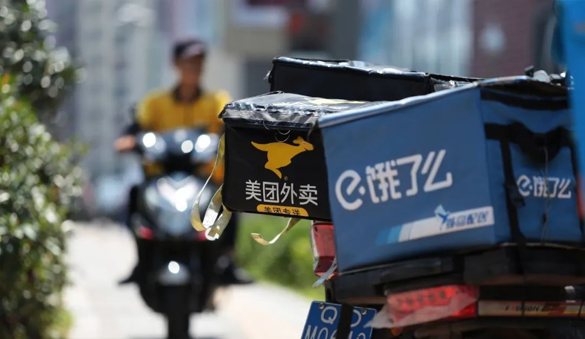
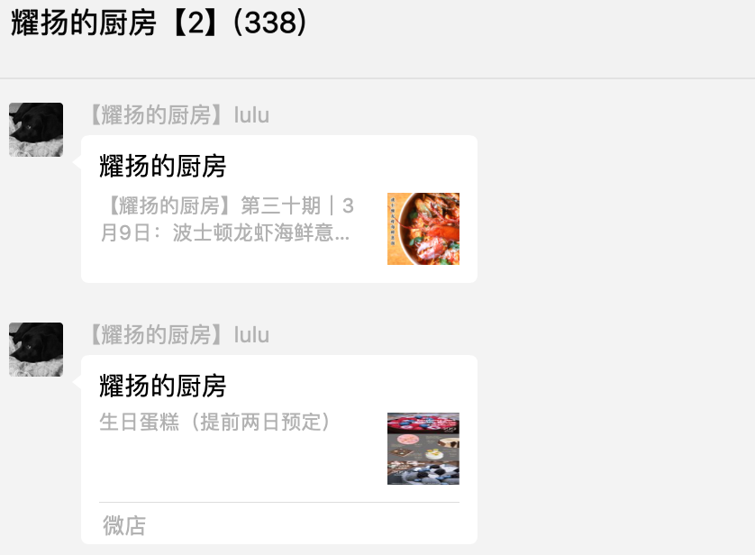

复不了的工，开不了的业：“每个周一我都准备去上班”
原文链接 备份链接 他们都有着细碎的烦恼、担忧、庆幸与反思疫情如洪水涌来，没有人能全身而退。 何时能完全恢复正常是大家都关心的问题。解封复工的消息不断传来，公园的花开了，路上的车多了起来，城市复活了。有人回归车间和工位，更多人早已开始远程 …

《创新经济战疫计划》，是燃财经在新型肺炎疫情期间推出的特别栏目，关注创新经济企业遇到的新难题、商讨应该采取的新对策，希望能够帮助中小企业一起战胜挑战、把握机会。
作者 | 苏琦
编辑 | 魏佳
新冠疫情爆发以来，和“吃”有关的行业可谓冰火两重天。
一方面，生鲜电商迎来爆发，京东生鲜配送到家业务相对节前环比增长370%，叮咚买菜大年三十的订单量比上月增长超过300%；美团买菜在北京地区的日订单量达到了春节节前单量的2-3倍；除夕至初四，每日优鲜平台实收交易额较去年同期增长321%。
另一方面，同样需要配送，同样关乎吃，外卖行业却数据惨淡。即使外卖成为不少餐饮商家自救的选择，外卖平台却因季节因素和疫情的双重打击，数据下滑明显。
据极光大数据统计，以除夕为分割点，春节假期美团平台的日活用户数较除夕前下降41.3%，饿了么的日活下滑则更为严峻，下降44.8%。

两个平台除夕后的恢复曲线均低于去年同期，美团尤为明显，人均使用频次也较去年下降了0.2次。
从渗透率上看，由于假期影响，每年1月份团购外卖均处于年度低谷，而2020年春节期间的总使用时长相比2019年下降更为显著。

外卖平台订单下滑，背后反映的其实是商家无生意可做，复工困难和消费者点餐的谨慎加剧了这一现象。虽然饿了么和美团分别针对商家推出了“扶持政策”，但商家对此并不买账，称能真正用得上的政策很少。部分商家选择和企业合作配送团餐、开发产品上线电商或发力小程序，展开艰难的自救。
***外卖订单量仅恢复至年前三分之一***
外卖平台的DAU数据接近腰斩，最先感知到的就是商家。
薇薇在杭州余杭区经营着一家西式快餐店“帕尼尼利亚”，位于钉钉楼下，主要售卖三明治、沙拉和咖啡。这是一家2019年10月才开张的新店，新店的堂食生意都一般，但在外卖平台上做得风生水起，做了三个月左右，每日单量已有250多单，按照25元的平均客单价，一天下来，营业额能有6000多元。

“12月开始，我的店发展势头不错。我是连锁加盟店，杭州共有8家店，我这家店12月销量都超过其他几家店。”薇薇告诉燃财经，她本想趁热打铁，过年之后把外卖的流量再往上冲一把，没想到碰到了疫情。
她介绍，节后上线外卖三周以来，第一周订单量极低，每天只有二三十单，现在虽说提升到七八十单，订单量依旧只有年前的三分之一。
过年期间帕尼尼利亚全程关店，本来暂定初七复工，但因为复工申请一直拖延，从年前除夕前一天歇业开始算，一共歇了28天，营业额为0。而外卖本来就占到整个店收入的60%-70%，现在堂食业务直接被砍掉，每天的营业额只能维持基本的店铺租金和员工工资。“偶尔订单量稍微低一点，每天还要纯亏一两百元。”薇薇称。
对帕尼尼利亚来说，原本早中餐是高峰时间段，现在中餐时间段的单量掉得非常厉害，早餐的订单量跟以往相比也只有50%的留存。订单量下滑，薇薇只能缩短营业时间：早上8:00开门，下午4:30就打烊。包括帕尼尼利亚在内，园区内周围的店铺，基本7点以后都接不到订单了。
同样的遭遇发生在广东轻食店“鲨啦派”的身上。店主蔡先生告诉燃财经，鲨啦派有7家门店，目前只有3家店铺复工，堂食业务原本占整体营业额的60%，目前受疫情影响无法开工，只能做外卖。鲨啦派于2月20开始恢复上线外卖平台，美团的订单量现在是40单左右，饿了么的订单量是20单左右，疫情前订单是现在的3-4倍。单店营业额以往每天有五六千元，现在每天连1000元都不到。
二三线城市的商家在外卖上恢复速度吃力，身处北京的商家也面临同样问题。小恒水饺创始人兼CEO李恒称，他关掉了小恒水饺近100家门店的堂食，只保留了外卖。在疫情到来之前，小恒水饺已在北京市场占了美团和饿了么65%-70%的饺子市场份额。但即便对于这样一家线上业务已非常成熟的快餐企业，春节疫情期间的外卖订单量只有平时的20%，堂食减到30%左右。
正常情况下，小恒水饺一个100平米的店面，每天营业额一万五到两万，春节期间会降到6000到7000元，现在春节期间单店每天的营业额只有2000到3000元，但是每个店每天的最低的运营成本也要2000到3000元，所以大部分店现在都是亏损的，这还不算总部的成本。
***难以享受到的扶持政策***
平台和商家可谓“唇亡齿寒”，商家的日子不好过，平台也没有春天。
疫情之下，外卖平台自身损失惨重，无论是外卖业务单量下滑、骑手人力紧缺，还是防护装备的采购和无接触配送的实行，都进一步增加了成本，导致每单成本急剧上升。
因此，平台如何帮助商家维护店铺经营，增加用户购买信心和兴趣，尽快恢复外卖订单数量，成为了关键。饿了么和美团分别针对商家推出了相关“扶持政策”，与商家一起共克时艰，实际上这也是两大平台紧密绑定商家的一场竞赛。
针对商家，美团方面启动“春风行动”。在复工方面， 美团在全国推行“无接触”“安心码”，食材供应链“保价不断货”，最快七小时送达；在现金流方面，美团到店服务湖北地区免佣再延一个月，全国新合作商户延长年费有效期两个月。此外，美团携手邮储银行、光大银行等追加100亿元优惠利率贷款，并赠送商家每月5亿元流量红包、4亿元商户补贴，帮助商户获客。
口碑饿了么则升级“开工十件套”，宣布从3月1日开始，对部分餐品优质、服务优秀的商户再一次进行佣金减免：其中饿了么平台的商品佣金降低5%-7%，口碑平台佣金部分减免，最高全免，为期1到3个月。
但对于这些政策，部分商家并不买账。
“就拿美团的贷款扶持政策来说，虽然它说是扶持，但是贷款此前就有，疫情期间的利息也没有变，优惠利率是针对优质商户的。真正能申请到贷款的，也都是云海肴云南菜、乐凯撒比萨、北京大鸭梨这样的大商户，对9成以上的中小商家来说只是望梅止渴。”蔡先生称。
而在流量上，蔡先生一个月在美团上要投几万元广告费。据他称，投了广告不一定有更多生意，但不打广告是百分百没生意，也就是说广告费已经几乎成了一项固定支出。现在外卖的收入断崖式下降，还要继续支出广告费，这让他十分苦恼。
薇薇则决定把两家平台的流量推广停掉。因为是新店，前三个月她投入得很猛，“两个平台一个月投入大概在1万多元，也不是小数字，所以先停了。”
至于佣金又是另一大难题。
蔡先生介绍，鲨啦派原本在美团上的佣金比例是21％，饿了么是18％，去年年底佣金开始上涨，美团涨了5个点，饿了么涨了3个点。

图 / 视觉中国
帕尼尼利亚同时上线了美团和饿了么，两边佣金都是19%，同时两个平台也都规定了保底的佣金——4.5元一单，比如一个19元的订单，19元乘以19%是3.61元，但这单照收4.5元，超过4.5元以上的都是按照总金额的19%结算。
薇薇称，在疫情期间，饿了么没有给到任何有用的扶持，美团会有一些满减和配送费的补贴，比如商家自己的满减是买25减3，平台补贴1元，用户看到的就是25减4，下单欲望就会强一点。
“两个平台唯一共同的表现是，帮我锁住了月销售数据。如果说节后的订单超过年前一个月中任意一天的订单量，就算节后的订单，如果没有超过，数据还是沿用节前的数据。” 薇薇称，其实从这一点上就感觉出来，平台的大盘数据也很差，所有商家肯定都是掉分的，因为月销售影响评分和排名。
但在蔡先生的眼里，销量不达标，即使排名不变，表面数据再好看，没生意就是没生意。
*****部分商家逃离平台艰难自救*****
外卖平台订单下滑，背后的另一个原因是商家数量也在减少。
对商家来说，现阶段要面临现金流告急、食材成本上升、房租水电固定支出、防疫物资支出、员工流失等诸多难题。
其中最紧要的是房租。薇薇正好要在二月中旬交下半年的店面房租，原本和房东协商分两期付款，三个月一付，后来房东松口，让她递交了申请书，申请减免1月房租。
“我们店目前是微亏状态，如果一直维持这种状态，我得预支半年的10多万房租，前期的四五十万投入，回本的时间也会无限期拉长。”薇薇称，自己的店还算是有老客户支持，能扛一扛，她所在园区的三分之一的店目前是关门的，甚至有大部分挂上了转让的牌子，但现阶段也不太好转。
薇薇隔壁的一家店直接清场搬走，押金也不要了。薇薇介绍，那家店也是去年刚签的合同，一共签了三年，还有两年交完房租才算不违约。疫情之下，后面的情况无法预知，要是没有人接盘，撑不完两年一样是违约，目前还要赶紧垫付半年的房租，所以干脆选择止步于此。
蔡先生前几天去广东天河区的街上走了一圈，“街头挺萧条的，很多店都贴着转让或者转租的字样。”
买防疫物资是商家们遇到的另一大复工难题。
薇薇闭关在家里的20多天，每天都在想帮办法买物资，最后靠朋友家人在泰国带货，才在开业一周以后收到了口罩等物资。“店里四五个员工，每天上班都要消耗口罩、手套还有酒精，前后花了近5000元，好在买到了。”
“关关难过关关过”是所有商家必须要面对的课题，外卖单量下滑、平台补贴收效甚微已经成了事实，这种情况下，一些商家开始逃离外卖平台，想办法自救。
为此帕尼尼利亚的总店开始利用自己先前积累的企业资源，和企业聊团餐项目。三明治和咖啡本来就比较贴合办公室白领的用餐需求和习惯，加上周边的同类品牌竞争相对较少，为店面打开了一些销量。
小恒水饺提前了自己2020的计划，积极恢复工厂复工，找京东、天猫、每日优鲜等渠道合作，上线饺子速冻品。
在北京胡同里拥有多家品牌的餐饮企业老板耀扬也在疫情期间进行了一些新尝试，之前外卖在他的整体流水里只占1%左右的份额，但疫情影响了堂食，团队为了提升销售，就在微信群用直播的方式把做菜的过程直播给群友，并将餐食在微店上线，通过闪送或者顺丰同城配送送到食客手中。

另外在北京有4家线下门店的大小咖啡，选择在自己的小程序端发力。其实大小咖啡2016年开第一家店的时候，就上线了外卖平台，但并没有实际运营过，一直都是放养状态。选择将精力放在自己的小程序上，是因为小程序不仅可以外卖还可以自提，还能进行全国范围内的零售业务。对于一家强调社区生命力的咖啡店来说，线下空间比线上流量重要得多。
疫情期间，大小咖啡单店的出杯量只有疫情之前的30%，营业额只有平时的20%-30%，损失不小，才倒逼着发力线上。
大小咖啡联合创始人张一芃告诉燃财经，“对于一个没有运营过第三方外卖平台的品牌来说，短时间之内去运营不会有结果，每一种运营背后都需要一套完整的逻辑，你得懂它的逻辑，才能够知道怎么去运营。在一开始的时候，品牌就要想清楚未来自己的增长曲线是在哪里，这次疫情下，匆忙上线外卖平台的商家，其实也不会产生非常大的交易量。”
关于疫情前后订单量变化、复工后订单量走势等问题，截至发稿前，口碑饿了么回复燃财经称，本地生活行业的商户营业已经回暖。截至3月初，60%中小商户已复工，其外卖订单量和复工第一周（2月10日-2月17日）相比增长100%。美团方面尚未回复。

值得注意的是，七麦数据显示，自2月10日大规模返工后，各家外卖平台的下载量已经开始有所回升。2020年，餐饮行业线上和线下的业态与竞合，或许将发生变化。
根据极光大数据预测，外卖用户没有大批流失，只是需求被暂时抑制，等疫情过后，预计整个外卖行业会有极速反弹。困境之中，外卖平台和餐饮商户只有互相助力，才能让用户在疫情之后继续好好吃饭。
*题图来源于视觉中国。应受访者要求，文中薇薇为化名。“创新经济战疫计划”相关的深度报道和沙龙实录可点击公众号菜单“战疫计划”阅读。


你最近一周点外卖了吗？花了多少钱？
欢迎在评论区留下你的评论。我们会在点赞前三（超过20个，统计周期为7天）的评论里挑选一位网友，送出腾讯视频季卡一张****。原创文章转载请点击公众号菜单“转载合作”。
一手资讯/硬核报告/每日红包/线下活动！就差你了！快加微信rancaijing01回复“读者”一键上车！


长按二维码向我转账
点个在看吧😘
受苹果公司新规定影响，微信 iOS 版的赞赏功能被关闭，可通过二维码转账支持公众号。
原文链接 备份链接 他们都有着细碎的烦恼、担忧、庆幸与反思疫情如洪水涌来，没有人能全身而退。 何时能完全恢复正常是大家都关心的问题。解封复工的消息不断传来，公园的花开了，路上的车多了起来，城市复活了。有人回归车间和工位，更多人早已开始远程 …
原文链接 备份链接 虽然受疫情影响巨大，但大宗原材料行业普遍预计疫情结束后的需求反弹将带动行业回暖 图/视觉中国 文 |《财经》记者 李斯洋 编辑 | 马克 新冠疫情给油气、煤炭、钢铁、有色金属等这些关乎国民经济命脉的大宗原材料价格造成 …
原文链接 备份链接 非常时期 他们的存在是照亮黑暗的光在武汉坚守工作岗位的普通人 户外探险队志愿者大象，打开后备箱，打开一个水果罐头，将糖水一饮而尽。 1月23日武汉封城，1月26日，武汉实行中心城区机动车禁行管理，出租车停运，医护人员的 …
原文链接 备份链接 国内非武汉地区本地新增病例首次实现零新增，局面完全可控。韩国疫情得到初步控制；欧盟27国全部染疫；意大利扩大限流举措。 文 |《财经》数据研究员徐进 图 |《财经》视觉中心 编辑 | 郝洲 一、国内形势盼巩固，境外输 …
原文链接 备份链接 本报记者 蒋政 北京报道 春节前订单延误波及整个产业链，春节后海外市场面临不确定性，疫情之下，服装外贸行业正受到阶段性影响。 “我们第一季度的订单，有80%几乎都没办法按时交货，金额差不多有一亿元。”作为福建省石狮市一 …